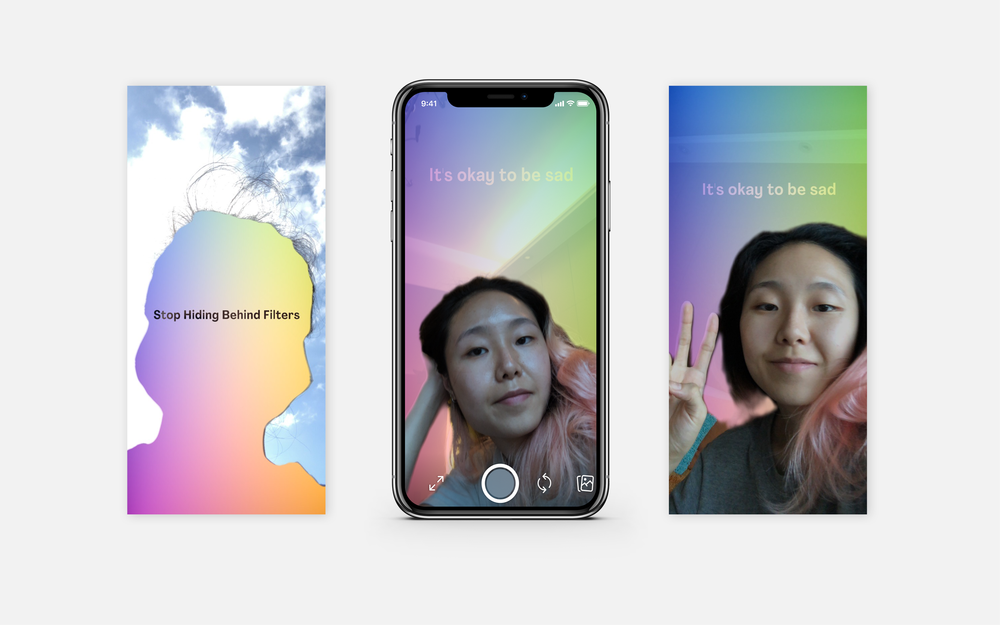
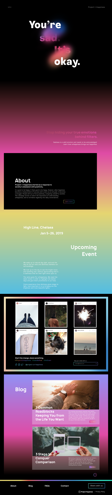

Social media is often oversaturated with happy posts. This hypothetical campaign is a response to the unhealthy obsession with positivity in today's society. Playing with the idea that light shines the brightest in dark, the visual language advocates the importance of darkness to bring out colors.


Products for campaign event

Instagram filter

Website landing page